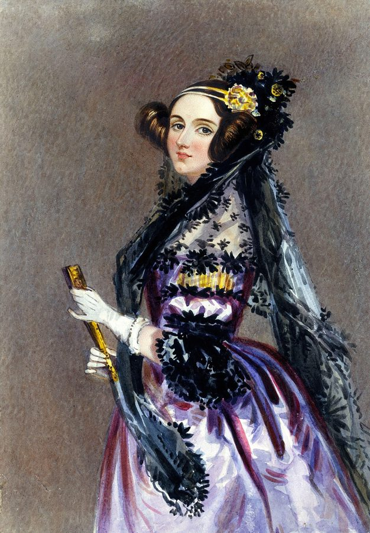
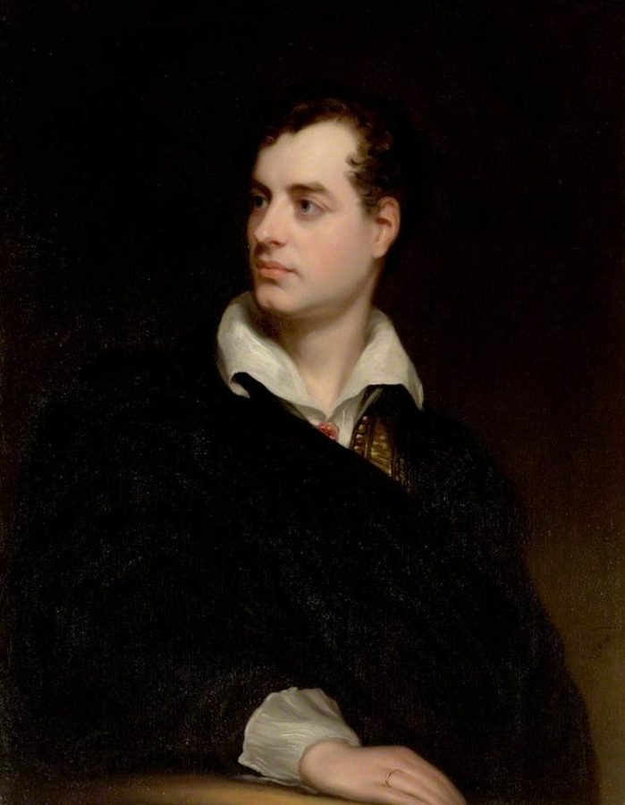
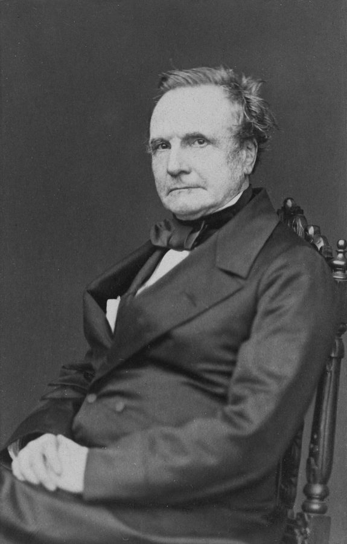
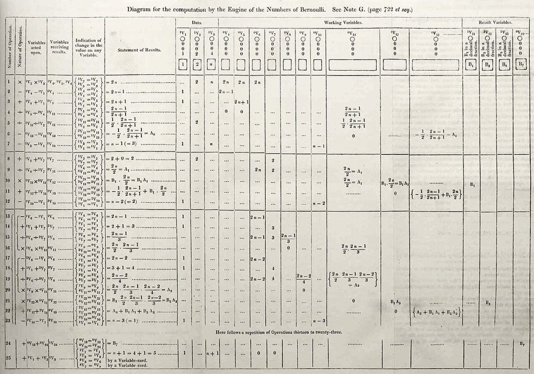
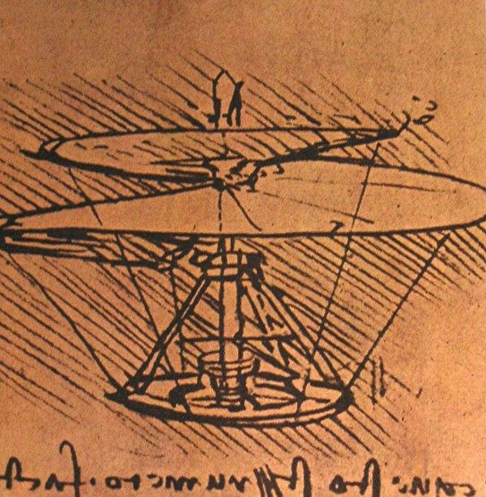
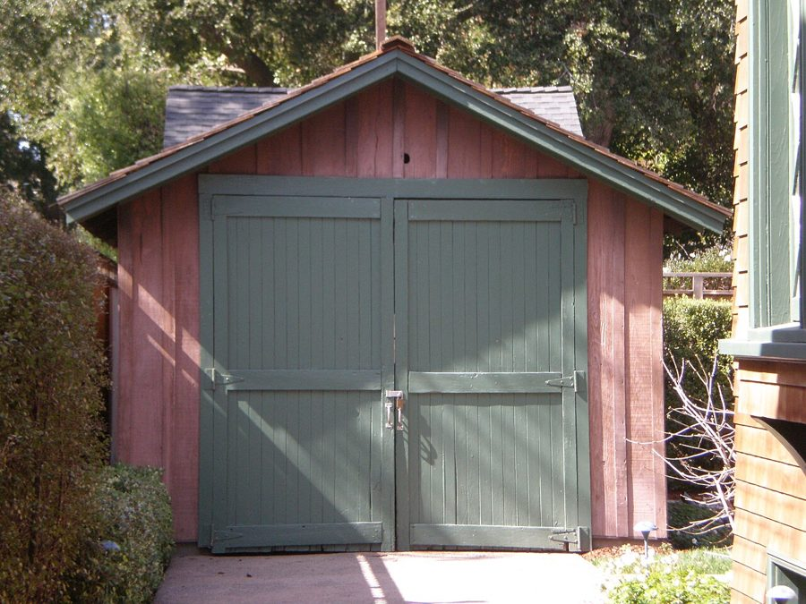
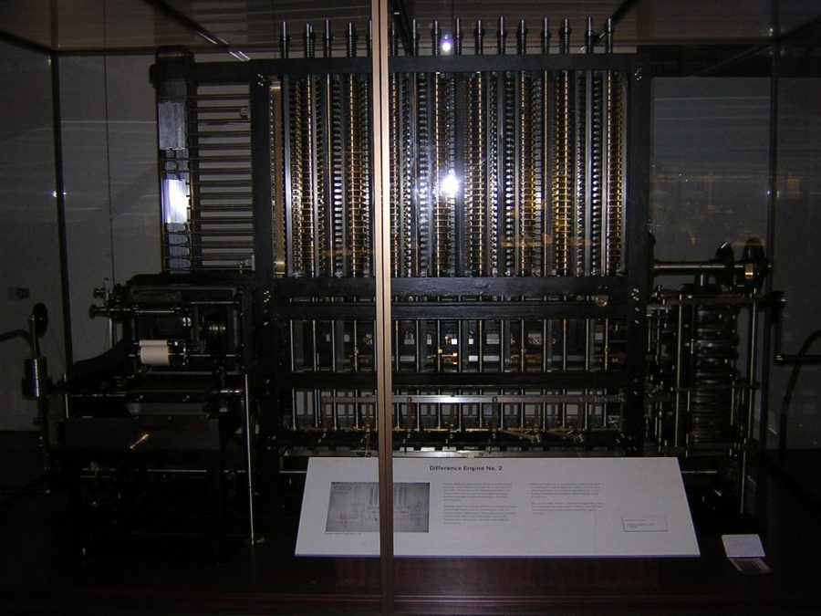
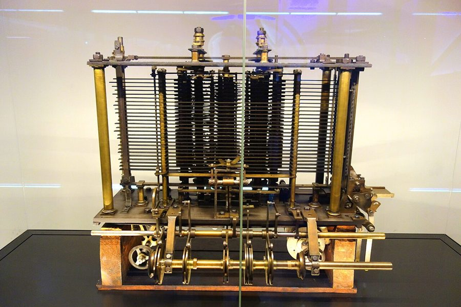
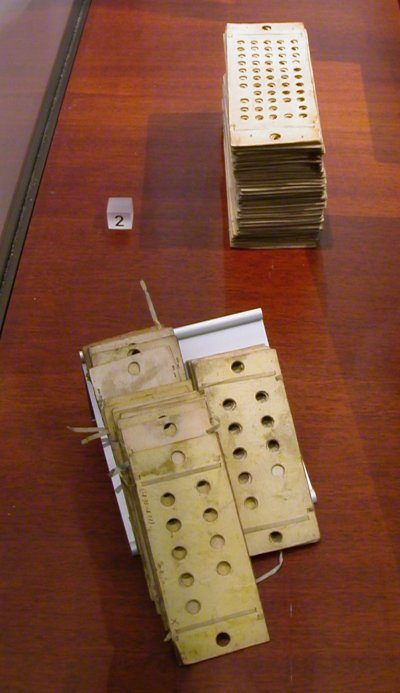

这一章在做什么
结语不再追一样东西，而是回答全书留下的一个问题。前六章的发明大多是「时候到了」，好几拨人同时做出来。可偶尔有人比同代人早几十年、甚至一百年，作者叫他们「时间旅行者」。
他拿埃达·洛夫莱斯和巴贝奇当主案例，把前面各章的人物叫回来对照，给出一个解释，最后落到给读者的一句建议。读的时候抓住两个词：simultaneous invention 和 adjacent possible 。

埃达·洛夫莱斯，约 1840 年的水彩肖像。结语的三节里有两节半围着她转。
传为 Alfred Edward Chalon 所作，公有领域，维基共享资源 分节地图
原书这一章分 3 节，节与节之间是一条短横线，每节开头几个词是小型大写字母。读完一节回来打个勾。
On July 8, 1835, an English baron …约 1000 词 用一个人的两难开场。抓住「数学」和「浪漫主义」这两股力怎样同时落在埃达身上。 WRITING CODE IN THE MIDDLE …约 1400 词 先讲她超前在哪，再转到规律：多数发明是多人同时做出的。抓住转折的那一段。 BUT IF SIMULTANEOUS INVENTION is …约 1100 词 回答例外：少数人凭什么超前。抓住作者的解释，和他对乔布斯那句话的反驳。
背景：作者默认你知道的事
结语的人名比前几章少，但第 1 节是一段维多利亚时代的家事，爵位、丑闻、浪漫主义，作者都当读者知道。按出现的顺序补上。
§1 拜伦，和大写的 Romantic
拜伦，1813 年的肖像。
Thomas Phillips，公有领域，维基共享资源 乔治·戈登·拜伦（Lord Byron，1788–1824），英国浪漫主义诗人，当时全欧洲最出名的文人，也是最出名的浪子。1816 年婚姻破裂、丑闻缠身，他离开英国再没回来，那时埃达才几个月大。
大写的 Romantic 指浪漫主义：推崇激情、直觉和不守规矩的天才，不是「浪漫」。埃达的母亲怕的就是这一套。
§1 baron、earl 和「洛夫莱斯」这个名字英国贵族分五等，从高到低：公爵 duke、侯爵 marquess、伯爵 earl、子爵 viscount、男爵 baron。埃达嫁的是男爵；1838 年维多利亚女王加冕，照例加封一批人（coronation list ），他升为洛夫莱斯伯爵。
伯爵的妻子叫 countess，所以她是 Countess of Lovelace。Lovelace 是封号，不是她的姓。
§1 皇家学会Royal Society，1660 年在伦敦成立，英国最高的科学团体，牛顿当过会长。它直到 1945 年才选出第一批女会士。
知道这个，才读得出作者说让女孩学代数和三角是 radical （激进）的分量：一百年后这扇门才开。
§2 巴贝奇和他的沙龙
查尔斯·巴贝奇，1860 年。
作者不详，公有领域，维基共享资源 查尔斯·巴贝奇（Charles Babbage，1791–1871），英国数学家，当过剑桥的卢卡斯数学教授（牛顿坐过的位子）。他先设计差分机，再设计分析机，两台在他生前都没造完。
他家周六晚上的聚会是伦敦名流的去处，达尔文、狄更斯都是客人。书里的 salon 指的就是这种私人聚会，不是美发店。
§2 那篇意大利文章，和埃达的「脚注」
埃达笔记里的那张表：让分析机一步步算出伯努利数。左边每一行是一步运算，右边各列是存数字的「变量」。后人说的「第一个程序」就是它。
Ada Lovelace，公有领域，维基共享资源 意大利工程师路易吉·梅纳布雷亚（Luigi Menabrea，后来当过意大利首相）听了巴贝奇的讲座，1842 年用法文发表了一篇介绍分析机的文章。埃达把它译成英文，1843 年刊出，后面附了她自己的七条注，编号 A 到 G，篇幅比原文长得多，署名只有缩写 A.A.L.。
书里叫它们 footnotes，实际是附在文后的长注。上面这张表在最后一条注里。
§2 相邻可能adjacent possible 是理论生物学家斯图尔特·考夫曼（Stuart Kauffman）的概念，作者在 2010 年的《好点子从哪里来》里拿它讲创新，本书第 2、3、4 章都提过，到结语才成了主角。
意思是：任何时刻，能做出来的新东西只有「从现有的东西再走一步能到的」那些。像一间屋子，你只能推开这间屋子里的门；进了下一间，才看得到再下一批门。
有人想到
技术和同行跟上
达·芬奇的螺旋飞行器草图 → 实用直升机：约 450 年
1480 年代 1930 年代
巴贝奇和埃达的可编程计算机 → 电子计算机：约 100 年
1843 1940 年代
斯科特的声波记振仪 → 爱迪生的留声机：20 年
1857 1877
1500 1600 1700 1800 1900 2000
本站示意图。结语点名的三位「时间旅行者」各自超前了多久。横线越长，说明想法离当时的「相邻可能」越远。多数发明没有这条线：想到和做成几乎同时，而且是好几拨人一起。 §2 南北战争的起因，和沙尘暴年代
1935 年 4 月 18 日，沙尘暴逼近得克萨斯州的斯特拉特福德。
George Everett Marsh Jr.，公有领域，维基共享资源
作者拿这两件事当「原因说不死、但还是值得追问」的例子。美国南北战争（1861–1865）的起因，奴隶制、州权、南北经济各占多少，是美国人从中学吵到大学的题目。
Dust Bowl 指 1930 年代美国大平原南部的连年沙尘暴：大旱加上过度开垦，表土被风整片刮走，几十万农民逃荒。
§3 达·芬奇的「直升机」
达·芬奇笔记里的螺旋飞行器草图。下面那行字是他惯用的镜像反写。
Leonardo da Vinci，公有领域，维基共享资源 莱奥纳多·达·芬奇 1480 年代在笔记里画过一个「空气螺旋」：一圈亚麻布做的螺旋面，靠人力转起来往上钻。它飞不起来，但「旋转的翼面可以把东西带上天」这个想法是对的。英语里提到「超前时代的天才」，他是头一个被举出来的人。
§3 前几章的人又回来了斯科特的声波记振仪，1859 年的型号。桶形喇叭收声音，末端的薄膜带动一根鬃毛，在转动的滚筒上划出波形。它只能记，不能放。
Édouard-Léon Scott de Martinville，公有领域，维基共享资源
斯科特 Édouard-Léon Scott de Martinville 巴黎的印刷工和速记爱好者，1857 年发明声波记振仪（phonautograph）。第 3 章。
都铎 Frederic Tudor 波士顿商人，把新英格兰的湖冰卖到热带。第 2 章。
伯宰 Clarence Birdseye 在加拿大拉布拉多跟因纽特人学到了速冻，后来做出冷冻食品这门生意。第 2 章。
达尔文 Charles Darwin 引言里那本讲兰花传粉的书。书里说它比《物种起源》晚四年，实际是 1859 年 11 月和 1862 年 5 月，相隔不到三年。
§3 车库，和乔布斯的斯坦福演讲
加州帕洛阿尔托的惠普车库。
BrokenSphere，CC BY-SA 3.0，维基共享资源 美国郊区的房子都带车库，里面常常不停车，堆工具和业余爱好。1939 年惠普在上图这间车库里创办；按通行的说法，1976 年乔布斯和沃兹尼亚克在乔布斯父母家的车库里装出第一批苹果电脑。所以 garage 自带「白手起家的发明家」的意思。
书里引的是乔布斯 2005 年在斯坦福毕业典礼上的演讲。他讲到从里德学院退学后去旁听书法课；1985 年被自己创办的苹果挤走，1997 年才回去。
这一章的科学，先用中文过一遍
差分机：只用加法算出一张表
书里说巴贝奇前二十年在做 state-of-the-art calculators ，指的是差分机（Difference Engine）。当时航海、工程用的数学用表全靠人手算，错误很多。巴贝奇的办法是「差分法」：把一个多项式在 x = 1、2、3…… 处的值排成一行，相邻两数相减，再把差相减，减几次以后差就成了常数。
反过来，只要知道第一行，后面每个数都能靠加法 推出来。加法可以交给齿轮：一个十齿的轮子代表一位十进制数，转满一圈带动下一个轮子进一位。
拿 x² 举例：减两次，差就不变了
x
1 2 3 4 5 6
x² 的值
1
4
9
16
25
36
相邻两数之差
3
5
7
9
11
差的差
2
2
2
2
要算下一个数，从下往上加：9 + 2 = 11，25 + 11 = 36。全程没有乘法。
本站示意图。差分法。带底色的三格是新算出来的一列：最下面一行永远是 2，往上加两次就得到下一个平方数。差分机就是一排排做这种加法的齿轮柱。 
差分机二号，伦敦科学博物馆。巴贝奇只留下图纸，这台是博物馆为纪念他诞辰两百周年、照图纸造出来的，能正常运转。
gocarts，CC BY 2.0，维基共享资源 分析机：结构是计算机，零件是齿轮
差分机只会一种算法，相当于一个写死的函数。分析机（Analytical Engine）要做的是通用机器：算什么、按什么顺序算，由外面喂进去的打孔卡片决定，卡片的主意借自雅卡尔织机（见引言）。
巴贝奇把机器分成几块。做运算的部分他叫 the mill ，mill 是磨坊、纺织厂的车间，原料进去加工的地方；存数字的部分他叫 the store，仓库。书里说的 CPU 和内存，就是这两样。
巴贝奇的分析机（1830 年代起的设计）
打孔卡片
the mill 运算室
the store 仓库
打印装置
指令和数据的入口
做加减乘除
一排排齿轮柱存数字
把结果印在纸上
相当于
程序（软件）
CPU 中央处理器
内存
输出设备
今天的计算机（1940 年代起，先是电子管，后来是芯片）
结构对上了，零件没对上：他手里只有黄铜齿轮和蒸汽动力。
本站示意图。分析机的四块和现代计算机一一对应。这就是书里那句「用工业时代的零件造数字时代的机器」的意思：图纸超前了一百年，材料和加工精度留在原地。 
分析机的试验模型，伦敦科学博物馆。巴贝奇生前只造出了这样的局部。
Daderot，公有领域，维基共享资源 
为分析机准备的打孔卡片。一种卡片说做什么运算，一种说对哪些数做。
Karoly Lorentey，CC BY 2.0，维基共享资源 埃达多走的那一步，用程序员的话说是：她看出这台机器处理的是符号 ，数字只是其中一种。只要音高、字母之间的关系能写成规则，机器就能照样摆弄它们。今天把文字、音乐、图片都编码成数字再计算，走的就是这条路。
英文 中文 一句话 algebra / trigonometry 代数 / 三角学 埃达少年时请家教学的两门课。 differential calculus 微分学 微积分里研究变化率的那一半。 Analytical Engine 分析机 巴贝奇设计的通用可编程机器，没造出来。 central processing unit 中央处理器（CPU） 执行运算的部分，巴贝奇叫 the mill。 random-access memory 随机存取存储器（内存） 可以直接读写任意一格的存储，不必从头顺序找。 punch card 打孔卡片 用有孔、无孔表示信息的硬纸卡，1970 年代还在用来给计算机输入程序。 instruction set 指令序列 书里指一步步让机器执行的运算清单。今天这个词多指 CPU 支持的全部指令。 vacuum tube 真空管（电子管） 1940 年代第一批电子计算机的开关元件，第 3 章讲过。 carbon filament 碳丝 早期白炽灯里通电发光的那根丝，第 6 章讲过。 LED 发光二极管 靠半导体发光，原理和白炽灯完全不同，爱迪生的时代没有这条路。 silicon dioxide 二氧化硅 玻璃的主要成分，第 1 章讲过。 hypertext 超文本 带链接、可以跳着读的文本，网页就是。 falsifiable 可证伪的 科学哲学用语：一个说法原则上能被某个观察结果推翻，才算科学理论。
词与短语
词条按在书里出现的顺序排，按节分组。斜体小字是它所在的那句话里的几个词，方便你在书里找到。
§1 On July 8, 1835, an English baron …
by all accounts
… By all accounts it was a …
据各方说法，大家都说
account 这里是「叙述、说法」，不是账户。作者没在场，用它表示「史料都这么讲」。
affair
… a much smaller affair than one …
场合，活动
熟词生义。不是「婚外情」，也不是「事务」。a small affair 是规模不大的一场活动。
intimacy
… The intimacy of the wedding was …
（婚礼）只请了少数亲近的人
不是「亲密关系」。an intimate wedding 是小范围的婚礼。
moral dissolution
… creative brilliance and moral dissolution continued …
道德败坏，放荡
dissolution 本义是溶解、解散；形容词 dissolute 是放荡的。和 brilliance 并列，才华和堕落一起出名。
hound
… no paparazzi to hound Baron King …
紧追不放，纠缠
名词是猎犬，这里作动词。paparazzi 是狗仔队。作者故意用今天的词说 1835 年的事。
a certain measure of discretion
… a certain measure of discretion was …
一定程度的低调
measure 这里是「程度、分量」，不是措施；discretion 是谨慎、不声张。
divide one’s time between
… began dividing their time between his …
轮流住在（几处）
介绍人物时的固定说法：She divides her time between London and New York.
enviable difficulties
… by the enviable difficulties of maintaining …
让人羡慕的「烦恼」
反讽。打理三处宅子算什么难处？前面的 albeit 是书面语的「尽管」。作者在轻轻挖苦贵族生活。
landed estate
… of running a landed estate, she …
有大片田产的庄园
landed 是「拥有土地的」，不是着陆。the landed gentry 是靠地租生活的乡绅阶层。
fray at the edges
… found herself fraying at the edges …
开始绷不住，心神不宁
本义是布料边缘磨得起毛、脱线。用在人身上，是外表还整齐、里面已经开始散。
dabble in
… and even to dabble in writing …
浅尝，玩票
本义是用手脚拨水。这句的潜台词：当时的女人最多可以玩玩文艺，不能当真。
ulterior motive
… had an ulterior motive in encouraging …
没说出口的真实动机
固定搭配，ulterior 几乎只和 motive 连用。通常带贬义，这里是中性偏讽刺。
debauchery
… her daughter from the debauchery of …
放荡，纵欲
读作 /dɪˈbɔːtʃəri/。the debauchery of art 是母亲的看法，不是作者的。
in the discovery line
… me little, in the discovery line …
在搞发现这一行
埃达信里的话。line 是「行当」，如 What line of work are you in? 这段是 19 世纪的书信体，句子不必细抠。
volunteer
… Annabella had volunteered the news to …
主动说出（没人问）
熟词生义。及物动词，宾语是信息：volunteer information 。和志愿者无关。
resign oneself to
… She could resign herself to the …
认命，只好接受
不是辞职。第 24 段的 we are resigned to 是同一个用法：只好将就。
disposition
… the talents and dispositions—even the mania …
性情，脾性
不是「处置」。破折号后面的 mania 是躁狂，作者补一句：连疯劲儿也是遗传的。
chart a path
… Ada charted a path that allowed …
走出一条路
chart 作动词是「绘制航线」。§3 末尾的 uncharted terrain （海图上没画的地方）和它呼应。
§2 WRITING CODE IN THE MIDDLE …
as chance would have it
… but as chance would have it …
碰巧，事有凑巧
书面套语，同类的还有 as luck would have it 。would have it 是「偏要这样安排」。
concoct
… the previous two decades concocting state-of-the-art …
鼓捣出，琢磨出
本义是把几样东西调在一起煮（汤、药）。也常指编造借口。第 15 段用它说埃达「拼出」自己的评注。
anticipate
… Babbage’s design anticipated all the major …
先于……而具备，预示了
熟词生义。主语是设计，不是人，所以不是「期待」。意思是后来才有的东西，它已经有了。
dub
… which Babbage dubbed “the mill” …
把……叫作，起名
不是「配音」。本义是国王用剑轻拍肩膀封骑士，引申为起绰号。
anxious to
… I am very anxious to talk …
急着想，很想
埃达信里的话。anxious to do 是迫切想做，不是为此焦虑。后面的 subservient to 是「供……驱使」。
stitch together
… aphoristic commentary, stitched together out of …
拼凑而成
stitch 是缝。aphoristic 是「格言式的、言简意赅的」。整句：她的评注是把一串长注缝在一起。
lie in
… greatest contribution lay not in writing …
在于
lay 是 lie 的过去式，不是「放置」。全句是这本书常用的 not in X, but rather in Y ：先否定你以为的答案，再给他的。
number cruncher
… was not a mere number cruncher …
只会埋头算数的机器
crunch 是嘎吱嘎吱地嚼。crunch numbers 是做大量枯燥的计算。下一句的 rote calculation 是同一个意思：机械的计算。
wrap one’s mind around
… enough to wrap one’s mind around …
弄明白（一个难懂的概念）
更常见的说法是 wrap one’s head around 。想象用脑子把一个东西整个包住。
conjure up
… machine might also conjure up language …
凭空变出
conjure 是变戏法、施法召唤。用它是在强调：在当时的人看来，机器写诗作曲近乎魔法。
lost to history
… they were lost to history …
被历史遗忘，湮没了
lost to 后面是「失去它的那一方」：历史把它弄丢了。
say
… artificial refrigeration, say, or the lightbulb …
比方说
两个逗号夹着的 say 是插入语，等于 for example。这一段里用了两次。
set in stone
… sequence of invention set in stone …
早已定死，不可更改
刻在石头上。平时多用否定：Nothing is set in stone. 这里是个真问题：发明的先后顺序是不是注定的。
pronounced
… clusters are so pronounced in the …
明显的，突出的
熟词生义。形容词，和「发音」无关：a pronounced accent 是很重的口音。
fossil record
… in the fossil record of technology …
（技术史留下的）化石记录
古生物学术语：地层里保存下来的全部化石。作者又在用进化论的词讲技术，和引言一脉相承。
wrestle with
… when we try to wrestle with …
费力地琢磨
本义是摔跤。对象是难题、良心、想法时，是「和它较劲」。
adjacent possible
… opportunities of our own adjacent possible …
相邻可能
possible 在这里当名词用，所以前面能加 our own。意思见「背景」。§3 里它还要出现好几次。
can only help
… in the past can only help us …
只会有好处
不是「只能帮我们做某事」。It can only help 是「有百利而无一害」。后面的 even if 才是作者留的余地。
§3 BUT IF SIMULTANEOUS INVENTION is …
present tense
… in the present tense of the …
现在时，这里指「当下这一步」
语法术语当比喻用：多数创新只在「此刻够得着的范围」里发生。和标题里的时间旅行相对。
see past
… them to see past the boundaries …
目光越过，看到……之外
past 是介词「越过」，不是「过去」。
circular
… all-purpose but somewhat circular category of …
循环论证的
不是「圆形的」。「他做得到因为他是天才，说他是天才因为他做到了」，等于没解释。下一段的 nonexplanation 说的是同一件事。
common thread
… there is a common thread to …
共同点，贯穿其中的线索
thread 是线。程序员的「线程」、论坛的「帖子串」都是它。这句后面跟着的冒号引出全章的论点。
at the margins of
… worked at the margins of their …
在……的边缘地带
margin 本义是页边空白。不是「利润率」。
stenography
… borrowed metaphors from stenography and printing …
速记
用简化符号把人说的话实时记下来的技术。斯科特的想法是：能不能让声音自己「速记」自己。
blinders
… can also serve as blinders, keeping …
（马的）眼罩，比喻挡住视野的东西
套在马眼两侧、让它只能看前方的皮罩。英式说 blinkers。
literal
… Sometimes those borders are literal, geographic …
真的，不是比喻的
「边界」本来是比喻（学科的边界），这里说有时是真的国界。最后一段的 both literal and figurative 是「真的和比喻的都算」。
litter your study
… of them littering your study or …
散落在你的书房里
两个熟词生义：litter 作动词是「乱扔得到处都是」，study 是书房。
corner office
… off to their corner offices and …
（高管的）转角办公室
美国写字楼里两面有窗的转角房间留给最高层，所以 corner office 等于「高位」。和它对着的是 cubicle，格子间。
tinkerer
… the hacker, the tinkerer, the maker …
爱拆拆装装的人
tinker 是东修修西改改。三个词并列，都是褒义：hacker 在这里是「爱钻研折腾的人」，不是入侵者。
commencement speech
… his famous Stanford commencement speech, Steve …
毕业典礼演讲
commencement 字面是「开始」，在美国专指大学毕业典礼：毕业是人生的开始。
sit in on
… and sitting in on a calligraphy …
旁听
没注册、不拿学分，只是坐进去听。前面的 stumble into 是「无意中撞进」。
appeal
… a more sentimental appeal to be …
呼吁，劝告
不是「吸引力」也不是「上诉」。sentimental 带贬义：煽情的、诉诸感情的。作者的态度从这个词开始变了。
conventional wisdom
… by orthodoxy and conventional wisdom …
大家都这么认为的看法
固定搭配，通常带「未必对」的意思。不是「传统智慧」。
stick with their hunches
… to stick with their hunches for …
认准自己的直觉不放
hunch 是说不出理由的预感。tenacity 是韧劲。这句以 Certainly 开头，是先让一步，后面的 But 才是重点。
get a little lost
… you need to get a little lost …
让自己迷一点路
全书最后几个词。lost 本来是坏事，这里当建议说：离开熟悉的领域，走到不认识的地方去。
值得停下来的句子
The computer would not just be an unusually flexible calculator; it would be an expressive, representational, even aesthetic machine.— 第 21 段，埃达那一步的分量。本站译：计算机不会只是一台格外灵活的计算器；它会是一台能表达、能表现、甚至有审美的机器。
分号前后是 not just X; it would be Y 。would 是「过去的将来」：站在 1843 年往后看。三个形容词一个比一个远，even 把最后一个顶到最高。
representational 是「能表现事物的」：机器里的数字可以代表数字以外的东西。
they worked at the margins of their official fields, or at the intersection point between very different disciplines.— 第 27 段，全章的论点。本站译：他们在自己正式领域的边缘工作，或者在差别很大的学科的交汇点上工作。
这句前面是 If there is a common thread … it is this: ，冒号后面才是答案。official 值得注意：指名义上的本行。后面两段的例子全是给这句作注，读例子的时候回来对一下，每个人的「边缘」或「交汇点」是什么。
Better to make new connections than remain comfortably situated in the same routine.— 第 33 段，作者的建议。本站译：与其舒舒服服地待在同一套日常里，不如去建立新的联系。
省略句，完整的是 It is better to … than (to) … 。前一句也是 Better to 开头，两句排比。comfortably situated 表面是「安顿得很舒服」，在这里是批评。
引言里作者说过这本书不评价好坏；到最后一段，他直接对读者提了建议。
检查一下理解
先在心里答，再点开。答错的那题，回书里把对应那一节再读一遍。
1.（§1）埃达的母亲让女儿学数学，是因为她思想开明、相信女人也能做科学吗？ 不是，书里说她另有打算（ulterior motive）：想用数学的条理和实用压住拜伦遗传下来的那股危险的艺术气质。讽刺的是，埃达后来的成就恰恰来自两样都没丢。
2.（§2）作者认为埃达最大的贡献是写出了第一个程序吗？ 不是。他先交代这些程序是不是她独立写的还有争议，然后用 not in … but rather in 转到真正的重点：她设想了连巴贝奇都没想到的用途，认为机器处理的可以是符号，将来甚至能作曲。
3.（§2）说爱迪生和同行们「没有一个在研究 LED」，是想说明什么？ 说明同时发明的人不只是碰巧同时，他们连「问题大概怎么解」的前提都一样：真空、灯丝。相邻可能有边界，同代人都在同一圈门里找，LED 那扇门当时根本不在屋里。
4.（§2）作者承认自己的解释 not falsifiable。他是在说这些解释不可信吗？ 他在留余地，不是在否定。他的意思是：历史解释没法像科学理论那样做实验检验，只能带几分推测；但我们今天也身处类似的变革，所以这种追问仍然值得做。
5.（§3）作者怎么看「因为他们是天才」这个解释？ 他说这个解释是循环的，后面干脆叫它 nonexplanation。他不否认这些人聪明，但指出聪明人很多，超前的人很少，所以至少同样重要的是他们的想法在什么环境里长出来。
6.（§3）作者引乔布斯的演讲，是赞同还是反对？ 一半一半。他赞同演讲前面的故事：意外的经历和跨界碰撞能解放头脑。他反对的是那句劝人忠于内心的话，认为只听自己内心是不够的，要去挑战它。他也留了一句：想做渐进的改进，专注于本行并没有错。